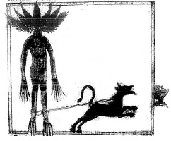

ŞEKİL 9. Kimi zaman insana benzer yapıdaki adamotu kökü, topraktan sökülürken o denli güçlü bir çığlık atar ki, onu duyanlar korkudan ölür (duymamak için kulaklara balmumu tıkamalıydı). Bu nedenle kök, bir (siyah) köpeğin boynuna bağlandıktan sonra köpeğe uzatılan bir et parçası (resimde ayaklı kâse içinde) yardımıyla köpek çağrılarak topraktan çıkartılır [Antonius Musa Brasavola (1500-1555), Der herba vettonica (Vettonya Otu Üzerine), 16. yüzyıl, Wellcome Institute Library, Londra].33, 34